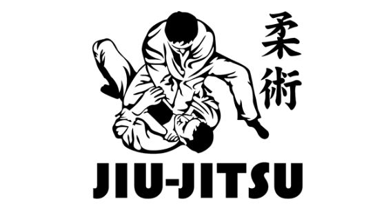
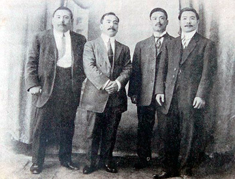

Historia do Jiu-Jitsu no Japão

O Jiu-Jitsu brasileiro ou, lá fora, o Brazilian Jiu-Jitsu ou BJJ (chamado também como jujitsu ou jujutsu) é uma arte marcial de raiz japonesa que se utiliza essencialmente de golpes de alavancas, torções e pressões para levar um oponente ao chão e dominá-lo. Literalmente, jū em japonês significa “suavidade”, “brandura”, e jutsu, “arte”, “técnica”. Daí seu sinônimo literal, “arte suave”.
Sua origem secular, como sucede com quase todas as artes marciais ancestrais, não pode ser apontada com precisão. Estilos de luta parecidos foram verificados em diversos povos, da Índia à China, nos séculos III e VIII. O que se sabe é que seu ambiente de desenvolvimento e refinamento foram as escolas de samurais, a casta guerreira do Japão feudal.
A finalidade de sua criação se deu pelo fato de que, no campo de batalha ou durante qualquer enfrentamento, um samurai poderia acabar sem suas espadas ou lanças, necessitando, então, de um método de defesa sem armas. Como os golpes traumáticos não se mostravam suficientes nesse ambiente de luta, já que os samurais vestiam armaduras, as quedas e torções começaram a ganhar espaço pela sua eficiência. O Jiu-Jitsu, assim, nascia de sua contraposição ao kenjitsu e outras artes ditas rígidas, em que os combatentes portavam espadas ou outras armas.

Conde Koma e sua equipe em Cuba, em 1912
Eterno defensor das técnicas de defesa pessoal do Jiu-Jitsu, Maeda embarcou para os Estados Unidos em 1904, em companhia de outros professores da escola de Jigoro Kano. À época, graças aos laços políticos e econômicos entre Japão e EUA, as técnicas japonesas encontravam grandes e notórios admiradores em solo americano. Em 1904, por exemplo, o presidente Theodore Roosevelt tomara aulas com o japonês Yoshitsugu Yamashita.
Nos EUA, o ágil japonês começou a colecionar milhares de combates e adversários tombados pelo caminho, em países como a Inglaterra, Bélgica e Espanha, onde sua postura nobre fez nascer o apelido que o consagrou, Conde Koma. De volta à América, o lutador fez diversas apresentações e desafios em países como El Salvador, Costa Rica, Honduras, Panamá, Colômbia, Equador, Peru, Chile e Argentina. Em julho de 1914, o valente japonês de 1,64m e 68kg, segundo consta, desembarcaria no Brasil para fincar raízes e mudar a história do esporte.

Maeda colecionaria histórias saborosas em terras brasileiras. Após rodar pelo país, o faixa-preta de Jiu-Jitsu se estabeleceu em Belém do Pará. Certo dia, encarou o desafio de um capoeirista conhecido como “Pé de Bola”, de cerca de 1,90m e quase cem quilos. Maeda não se fez de rogado e ainda deixou o ousado rival portar uma faca na luta. O japonês desarmou-o, derrubou e finalizou o brasileiro. Conde Koma, como se tornou tradição entre os professores de Jiu-Jitsu, também lançava desafios para rivais famosos do boxe. Foi o que fez com o afamado boxeador americano Jack Johnson, que jamais aceitou a luta.
Foi Koma, ainda, que promoveu o primeiro campeonato de Jiu-Jitsu do país – na verdade, um festival de lutas e desafios para promover o esporte desconhecido.
Os pesquisadores Luiz Otávio Laydner e Fabio Quio Takao encontraram, na Gazeta de Notícias, de 11 de março de 1915, as regras do evento marcado para o teatro Carlos Gomes, no Rio de Janeiro, então capital do país. Koma anunciava as primeiras regras do nosso Jiu-Jitsu, um regulamento com dez leis simples:
- Todo lutador deverá se apresentar decentemente, com as unhas das mãos e dos pés perfeitamente cortadas;
- Deverá usar traje kimono, que o Conde Koma lhe facilitará;
- Não é permitido morder, arranhar, pegar com a cabeça ou com o punho;
- Quando se fizer uso do pé nunca se fará com a ponta e sim com a curva;
- Não se considera vencido o que tenha as espáduas [costas] em terra ainda que tenha caído primeiro;
- O que se considera vencido o demonstrará dando três palmadas sobre o acolchoado ou sobre o corpo do adversário;
- O juiz considerará vencido o que por efeito da luta não se recorde que deve dar três palmadas;
- As lutas se dividirão em rounds ou encontros de cinco minutos por dois de descanso. Tendo o juiz de campo que contar os minutos em voz alta para maior compreensão do público;
- Se os lutadores caírem fora do tapete, sem que nenhum deles tenha avisado, o Sr. Juiz deve obrigá-los a colocar-se de novo no centro do acolchoado, em pé, frente a frente;
- Substituirão em suas obrigações ao sr. Juiz os srs. Jurados. Nem a empresa nem o lutador que vencer é responsável pelo maior mal que possa sobrevir ao vencido, se por tenacidade não quiser dar o sinal convencionado para terminar a luta e declarar-se vencido.
Em 1917, um adolescente de nome Carlos Gracie (1902–1994) viu pela primeira vez, em Belém, uma apresentação do japonês que era capaz de dominar e finalizar os gigantes da região. Amigo de seu pai, Gastão Gracie, Maeda concordou em ensinar ao garoto irrequieto a arte de se defender. Desde então começa realmente a Historia do Jiu-Jitsu Brasileiro.
Ir para o inicio